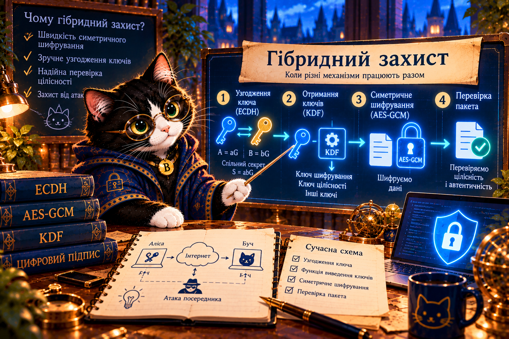

2.14. Гібридний захист
Чому для захищеного листування недостатньо одного криптографічного алгоритму?
Буч надсилає Алісі секретне повідомлення. Допоможіть їм домовитися про ключ, захистити пакет і перевірити, чи не втрутилася Єва.

Маршрут місії
Навчальне відеоВебботПрактики 1–4Форма відповідей ↗Навчальне відео
Посилання на відео поки не надано. Тут з’явиться відео цієї місії, коли Ви його додасте.
Проблема → математична ідея
Важливо: ECDH сам по собі не перевіряє особу. Без автентифікації відкритих ключів Єва може провести атаку посередника. Nonce не секретний, але має бути унікальним для кожного шифрування з тим самим ключем.
AAD — дані, які не шифруються, але захищаються від підміни. AES-GCM перевіряє і шифротекст, і AAD.
Чотири лабораторії
Короткий Python — схема, не реалізація
shared = key_agreement(my_private, peer_public) key = KDF(shared, context) nonce = unique_nonce() ciphertext, tag = AEAD_encrypt(key, nonce, message, aad) # Одержувач перевіряє тег перед використанням даних
Поясніть, яка частина забезпечує конфіденційність, а яка — цілісність і автентичність пакета.
Компетентнісне завдання
Шкільна редакція приймає конфіденційні звернення. Команда А використовує лише шифрування. Команда Б додає автентифіковане узгодження ключів, KDF, AEAD і перевірку пакета. Побудуйте схему команди Б, змоделюйте підміну й поясніть, які ризики залишаються.
Завершення місії
Перевірте свої висновки й заповніть форму після виконання практик.
Форма відповідей ↗